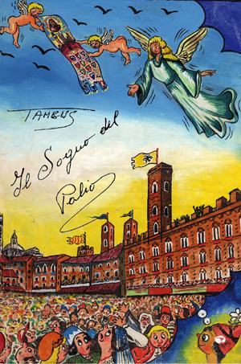

|
- I LIBRI SUL PALIO DI SIENA -
|
|
Tambus (al secolo Bruno Tanganelli) – IL SOGNO DEL PALIO - [23 marzo 1950] – Associazione Noi Siena - Siena, Betti Editrice, 2012
A cura di Stefano Barsanti e David Chiti, prefazione di Duccio Balestracci.
Il viaggio di un bambino dentro il Palio di Siena, dentro un sogno, dentro un sentimento. E’ questo lo stratagemma usato da Bruno Tanganelli detto Tambus per proporre la sua fiaba sulla più bella giostra del mondo.
Scritta nella prima metà degli anni ’50 del secolo scorso, completa di bozzetti originali disegnati appositamente dall’autore, “Il Sogno del Palio” guida il lettore dentro la tradizione senese riscoprendone i tratti più genuini e veri.
Un viaggio che è dunque una riscoperta di valori antichi, in qualche caso persi perché fagocitati dalla modernità che tutto uniforma e appiattisce. Un’opera rivolta ai ‘cittini’ di Siena che tramite gli occhi di Girellino, il bambino giramondo, possono imparare a coltivare il loro sentimento unico e irripetibile: il sentimento del Palio. Ma Tambus, artista completo, anima poliedrica e verace di Siena, poeta e cantore dei vizi e delle virtù del suo popolo, fa qualcosa di più: unisce il sogno alla realtà trasformando in fiaba l’aneddotica del Palio e mostrando in modo fantastico ed immaginifico, a cavallo tra storia e leggenda, la vita vissuta dalla città durante i quattro giorni in cui si articola il Palio di Siena.
L’opera è stata completata dalle annotazioni di carattere storico, artistico e di costume di Roberto Cresti che ha interpretato la metamorfosi del sogno in realtà e di realtà in sogno proposta da Tambus costruendo un libro nel libro. “Il Sogno del Palio” è dunque un’opera da leggere e da rileggere in cui storia e tradizione rinascono sempre nuovi e vitali ogni anno allo squillar delle chiarine.
La prefazione di Duccio Balestracci porta a conoscenza dei più giovani il carattere multiforme di Tambus che con questa fiaba inedita, recuperata e restaurata sessanta anni dopo la sua stesura, regala alla sua città l’ennesimo affresco di senesità.
Per i senesi questa fiaba è un veicolo per ritrovare il loro passato e dare forza al presente della loro tradizione. Per i forestieri è un manuale per tentare di capire questo popolo sentimentale, fiero e ombroso che riesce a vivere e rivivere oggi con naturalezza il suo glorioso medioevo.
Come afferma lo stesso Tambus nella prefazione alla storia: “Sembrerà strano far conoscere il Palio attraverso una fiaba ma tutti i conservatori del costume dovranno giustamente convenire che nel secolo della fantasia può trovare posto anche questo mio sogno.”

|
|